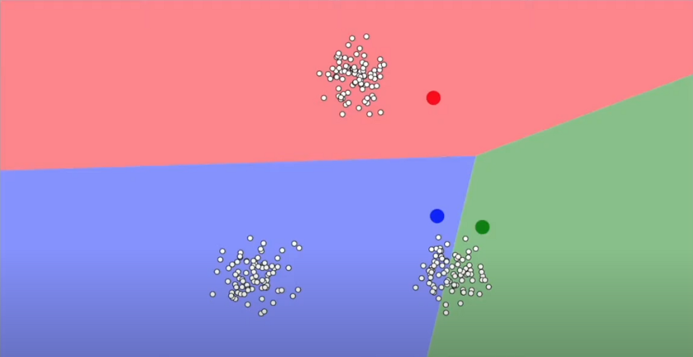
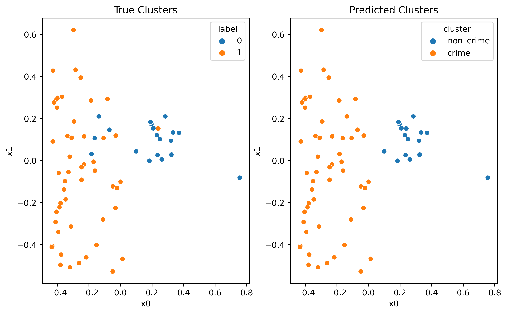
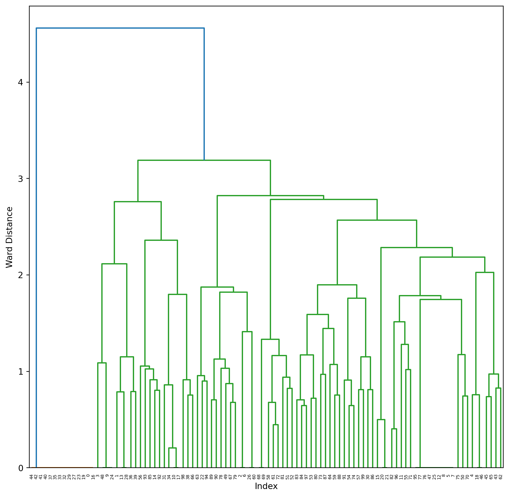

Similiar to previous tab, the dataset I will apply clustering with will be the twitter crime report I have collected. Since the break-in crimes reported by SFPD in previous years are majorly categorical data like report type, location and value of good lost, which k mean clustersing aren’t able to handle these discrete data and generate the distance between the data points, so in this application of clustering we will focus on the twitter crime report dataset. The feature for clustering will be vectorized text and will be compared with the labeled text to see how are the unsuprvised clustering compared with others.
Theory
K-Means Clustering
K-Means Clustering is one of the most known and used unsupervised algortithms (no targeted labels) in data science and is used to group a set of data into a defined number of groups. However, the process of this algorithms is relatively simple. The algorithm initializes random positions (called centroids, the red, blue and green points in the picture below) in the vector plane and assigns the point to the nearest centroid. The algorithm calculates the average position (or, distance) of the points to the center of the data points (centroid), and moves the respective centroid to that position and updates the group to which each point belongs. The algorithm converges when all points are at the minimum distance from their respective centroid.
Its worthly to notice that This distance is often measured in Euclidean Distance (Distance = \(\sqrt{(x_1 - y_1)^2+(x_2 - y_2)^2+...+(x_n - y_n)^2}\)) but there are some expectations.

Initialized the centroids
First Step: Initializtion k centroids from the dataset
Compute the distance of points to the centroids, assign the position of the centroids.
Repeat these steps. Stop till covereged or the stopping criteria is met.
stop untill coverges
The stopping criteria is when:
Centroids of newly formed clusters don’t change (convergence)
Data points remain in the same cluster
Maximum number of iterations are reached
Desipte been the most used unsupervised learning algorhtims, K-Means clustering does have its limitations, the main drawback that it is sensitive to poor initializiation of clusters, which could lead to the optimal points being stuck in a local optimum space. Yet, K-Means is still an interpretable, efficient, clustering algorthims that guarantees an approximation, and works well for clusters having similar properties.
DBSCAN (Density-based Spatial Clustering of Applications with Noise)
DBSCAN is clustering method that is used in machine learning to separate clusters of high density from clusters of low density region. It is useful when the clusters are irregular or non-spherical, for example, or when noise and outliers are present in the features. Its a very efficient clustering algorithm as it groups together points that are closely packed together (points with many nearby neighbors), this closeness is called the radius of \(\epsilon\), which is the distance measure used to locate the points in the surrounding neighbors. Anohter parameters that could been used to min_samples, which is the minium number of points to include in each search.
the difference between DBSCAN and K-means
Although both DBSCAN and k=means are unsupervised algothrims that could handle complex data, they are not the same. As shown in the figure above, DBSCAN focus on the density of the data points, where the K-means are determine by the distance between each datasets, thus DBSCAN can locate non-linearly separable clusters but K-Means cannot. Moreover, unlike K-Means, there is no need to specify the number of clusters “k” when employing DBSCAN. However, choosing a value for \(\epsilon\) is more difficult than choosing a good initial value for “k” for K-Means because \(\epsilon\) is less intuitive to reason.
Hierarchical (Agglomerative vs Divisive) Clustering
Hierarchical clustering, or so called technique is different from Partitional clustering, which divides the data into non-overlapping clusters and form a hierarchy of cluster. The results of hierarchical clustering are usually presented in a dendrogram, a tree-like diagram showing hierarchical relationships between different sets of data. The dendrogram can be used to decide when to stop merging the clusters or, in other words, finding the optimal number of clusters. We cut the dendrogram tree with a threshold at a height where the threshold line can traverse the maximum distance up and down without intersecting the merging point.
the overview of hierarchical clustering
There exist two main types of hierarchical clustering: >- Agglomerative clustering (bottom up): Start with the points as individual clusters. At each step, move up the hierarchy by merging the closest pair of clusters until only one cluster is left. >- Divisive clustering (top down): All observations start in one, all-inclusive cluster. At each step, move down the hierarchy by splitting a cluster recursively until each cluster contains a point. Therefore, this approach is exactly opposite to Agglomerative clustering.
Hierarchical clustering, unlike K-Means, does not require initializing the number of clusters apriori and any valid measure of distance could be used to decide the relationship between each data points. However, on the other hand, this means hierarchical clustering are more sensitive to outliers and often take more space and time to compute compare to other faster algorthims like the k-means.
Method
Data Selection and preparation
Code
# import librariesimport numpy as npimport pandas as pdimport matplotlib.pyplot as pltimport seaborn as snsfrom sklearn.feature_extraction.text import TfidfVectorizerfrom sklearn.cluster import KMeansfrom sklearn.decomposition import PCA# string manipulation libsimport reimport stringimport nltknltk.download('punkt')nltk.download('stopwords')from nltk.corpus import stopwords
[nltk_data] Downloading package punkt to
[nltk_data] /Users/yanweitong/nltk_data...
[nltk_data] Package punkt is already up-to-date!
[nltk_data] Downloading package stopwords to
[nltk_data] /Users/yanweitong/nltk_data...
[nltk_data] Package stopwords is already up-to-date!
Code
def preprocess_text(text: str, remove_stopwords: bool) ->str:"""This function cleans the input text by - removing links - removing special chars - removing numbers - removing stopwords - transforming in lower case - removing excessive whitespaces Arguments: text (str): text to clean remove_stopwords (bool): remove stopwords or not Returns: str: cleaned text """# remove links text = re.sub(r"http\S+", "", text)# remove numbers and special chars text = re.sub("[^A-Za-z]+", " ", text)# remove stopwordsif remove_stopwords:# 1. creates tokens tokens = nltk.word_tokenize(text)# 2. checks if token is a stopword and removes it tokens = [w for w in tokens ifnot w.lower() in stopwords.words("english")]# 3. joins all tokens again text =" ".join(tokens)# returns cleaned text text = text.lower().strip()return text
Since tweets including a lot of meaningless stopwords and symbol in the corpus, we use NLTK libirary to import the stopwords and write a function that takes some text as input and returns a clean verision of it.
Code
# load the data df=pd.read_csv("../../data/01-modified-data/breakin_prediction.csv", encoding ="ISO-8859-1")df['cleaned'] = df['text'].apply(lambda x: preprocess_text(x, remove_stopwords=True))df
text
label
cleaned
0
no mention yet of the Libs own lawyer resignin...
0
mention yet libs lawyer resigning saying may b...
1
I want Spidey back. After NWH, my heart broken...
0
want spidey back nwh heart broken pieces
2
The owner of a Vancouver butcher shop is calli...
0
owner vancouver butcher shop calling city take...
3
He had thought she looked cool her eyes shone ...
0
thought looked cool eyes shone like cats eyes ...
4
nose got broken at a show he popped it back in...
0
nose got broken show popped back place
...
...
...
...
95
For those without a calculator, thatÕs a getti...
1
without calculator getting robbed batting aver...
96
dreamt someone stole my catalytic converter. W...
1
dreamt someone stole catalytic converter sitti...
97
To the lady who had her rear window smashed in...
1
lady rear window smashed everything valuable s...
98
donÕt leave anything visible in your car. It w...
1
leave anything visible car result broken windo...
99
Just broke a blue car's window to take some fr...
1
broke blue car window take free stuff san fran...
100 rows × 3 columns
Now since the text has been cleaned, we are ready for text vectorization. They way we vectorized the text is through TF-IDF Vectorization, which converts our corpus into a numerical format by bringing out specific terms, weighing very rare or very common terms differently in order to assign them a low score. With this vectorization technique we are able to group our documents considering the most important terms that constitute them.
Code
# initialize the vectorizervectorizer = TfidfVectorizer(sublinear_tf=True, min_df=5, max_df=0.95)# fit_transform applies TF-IDF to clean texts - we save the array of vectors in XX = vectorizer.fit_transform(df['cleaned'])
Perform K-means clustering
Code
# import relevent libraries for clusteringfrom statistics import modefrom sklearn.cluster import KMeansfrom scipy.spatial.distance import cdistfrom sklearn.metrics import classification_report, confusion_matrix, ConfusionMatrixDisplay, accuracy_score# initialize kmeans with 2 centroidskmeans = KMeans().fit(X)# store cluster labels in a variableclusters = kmeans.labels_# initialize PCA with 2 componentspca = PCA(n_components=2, random_state=42)# pass X to the pcapca_vecs = pca.fit_transform(X.toarray())# save the two dimensions in x0 and x1x0 = pca_vecs[:, 0]x1 = pca_vecs[:, 1]# assign clusters and PCA vectors to columns in the original dataframedf['cluster'] = clustersdf['x0'] = x0df['x1'] = x1fig,ax = plt.subplots(1, 2,figsize=(10,6), dpi=150)sns.scatterplot(x="x0", y="x1", hue="label", data= df, ax=ax[0])sns.scatterplot(x="x0", y="x1", hue="cluster", data= df, ax=ax[1])ax[0].set_title("True Clusters")ax[1].set_title("Predicted Clusters")
Text(0.5, 1.0, 'Predicted Clusters')
With sk learn’s default parametes, the dataset was split into 6 different groups compare to the actual 2 groups, thus the further tuning of the hyper-parameters is needed in this case.
Hyper-parameter tuning with elbow method
For K means clustering we will use the elbow emethod to find the optimal number of clusters. we will use the inertia_ attribute to find the sum of squared distances of samples to their closest cluster center. We will use the range of 1 to 15 clusters, then we will plot the inertia_ values for each number of clusters.
As we see from the graph, as the number of cluster increase, the distortions and inertias naturally decreases, however, when the number of cluster = 2, the graph turns flat for the first time, thus 2 might be the best number of cluster in this analysis, which is also similiar to our actual label of the dataset.
Code
# initialize kmeans with 2 centroidskmeans = KMeans(n_clusters=2, random_state=42)# fit the modelkmeans.fit(X)# store cluster labels in a variableclusters = kmeans.labels_
Dimensional reduction and Final Result Visualization
Since it’s impossible to plot something greater than 3 dimensions, and if we look at the dimension of x with X.shape we see that it is (100,26). There are 100 vectors for each text and each with 26 dimensions, thus its impossible for visual comparison.
Fortunately, there is a technique called PCA (Principal Component Analysis) which reduces the dimensionality of a data set to an arbitrary number while preserving most of the information contained in it. Thus we can run PCA to reduce the dimension of the clusterd and easy to visualization.
Code
# initialize PCA with 2 componentspca = PCA(n_components=2, random_state=42)# pass X to the pcapca_vecs = pca.fit_transform(X.toarray())# save the two dimensions in x0 and x1x0 = pca_vecs[:, 0]x1 = pca_vecs[:, 1]# assign clusters and PCA vectors to columns in the original dataframedf['cluster'] = clustersdf['x0'] = x0df['x1'] = x1cluster_map = {0: "non_crime", 1: "crime"} # mapping found through get_top_keywordsdf['cluster'] = df['cluster'].map(cluster_map)fig,ax = plt.subplots(1, 2,figsize=(10,6), dpi=150)sns.scatterplot(x="x0", y="x1", hue="label", data= df, ax=ax[0])sns.scatterplot(x="x0", y="x1", hue="cluster", data= df, ax=ax[1])ax[0].set_title("True Clusters")ax[1].set_title("Predicted Clusters")
Text(0.5, 1.0, 'Predicted Clusters')

As we can see from the graph above, the k-means clustering with k=2 is perfoming excellently compare to the the True clusters.
Perform DBSCAN
Hyper-parameter tuning with Silhouette
Major challenge of using DBSCAN algorithm is to find right set hyper parameters(eps and min_samples values) to fit in to the algorithm for getting accurate result. And Silhouette metric is a distance calculation algorithm using euclidean or Manhattan distance. A Silhouette Score always ranges between -1 to 1. A high Silhouette score suggests that the objects are well matched to their own cluster and poorly matched to their neighborhood clusters. Thus this will be the way to to find the optimal eps and min_sample values.
Code
# perform DBSCAN clustering. use the eps and min_samples parameters to find the optimal number of clusters.from sklearn.cluster import DBSCANfrom sklearn.metrics import silhouette_samples, silhouette_score# Defining the list of hyperparameters to tryeps_list=np.arange(start=0.1, stop=4.1, step=0.2)min_sample_list=np.arange(start=5, stop=10, step=1)# Creating empty data frame to store the silhouette scores for each trialssil_score_data = pd.DataFrame()for eps_trial in eps_list:for min_sample_trial in min_sample_list:# Generating DBSAN clusters db = DBSCAN(eps=eps_trial, min_samples=min_sample_trial)if(len(np.unique(db.fit_predict(X)))>=2): sil_score=silhouette_score(X, db.fit_predict(X))else:continue trial_parameters="eps:"+str(eps_trial.round(1)) +", min_sample:"+str(min_sample_trial) sil_score_data=pd.concat([sil_score_data, pd.DataFrame(data=[[sil_score,trial_parameters]], columns=["score", "parameters"])])# Finding out the best hyperparameters with highest Scoresil_score_data.sort_values(by='score', ascending=False)
score
parameters
0
0.160067
eps:0.9, min_sample:7
0
0.120461
eps:0.9, min_sample:6
0
0.112747
eps:0.9, min_sample:8
0
0.105726
eps:0.9, min_sample:5
0
0.051082
eps:0.1, min_sample:5
0
0.051082
eps:0.5, min_sample:8
0
0.051082
eps:0.7, min_sample:9
0
0.051082
eps:0.7, min_sample:8
0
0.051082
eps:0.7, min_sample:7
0
0.051082
eps:0.7, min_sample:6
0
0.051082
eps:0.7, min_sample:5
0
0.051082
eps:0.5, min_sample:9
0
0.051082
eps:0.5, min_sample:7
0
0.051082
eps:0.1, min_sample:6
0
0.051082
eps:0.5, min_sample:6
0
0.051082
eps:0.5, min_sample:5
0
0.051082
eps:0.3, min_sample:9
0
0.051082
eps:0.3, min_sample:8
0
0.051082
eps:0.3, min_sample:7
0
0.051082
eps:0.3, min_sample:6
0
0.051082
eps:0.3, min_sample:5
0
0.051082
eps:0.1, min_sample:9
0
0.051082
eps:0.1, min_sample:8
0
0.051082
eps:0.1, min_sample:7
0
0.051082
eps:0.9, min_sample:9
From the table we can tell that the best parameters for this model will be eps =0.7, and min number of samples be 7.
Final Results
Code
model = DBSCAN(eps=0.9, min_samples=7).fit(X)labels_DB = model.labels_# initialize PCA with 2 componentspca = PCA(n_components=2, random_state=42)# pass X to the pcapca_vecs = pca.fit_transform(X.toarray())# save the two dimensions in x0 and x1x2 = pca_vecs[:, 0]x3 = pca_vecs[:, 1]# assign clusters and PCA vectors to columns in the original dataframedf['DB_labels']= labels_DBdf['x2'] = x2df['x3'] = x3fig,ax = plt.subplots(1, 2,figsize=(10,6), dpi=150)sns.scatterplot(x="x2", y="x3", hue="label", data= df, ax=ax[0])sns.scatterplot(x="x2", y="x3", hue="DB_labels", data= df, ax=ax[1])ax[0].set_title("True Clusters")ax[1].set_title("Predicted Clusters")
Text(0.5, 1.0, 'Predicted Clusters')
As the graph has demonstrate, DBSCAN is not a great method when predicting the twitter crime report dataset, since most data pionts are left unidentified and it got the number of the cluster wrong. However, since DBSCAN is to separate clusters of high density from clusters of low density region, it’s reasonable to see this kind of performance.
Perform Hierarchical clustering
Code
from scipy.cluster.hierarchy import dendrogram, linkagefrom sklearn.cluster import AgglomerativeClusteringmodel = AgglomerativeClustering().fit(X.toarray())HC_labels= model.labels_df['HC_labels']= HC_labels# initialize PCA with 2 componentspca = PCA(n_components=2, random_state=42)# pass X to the pcapca_vecs = pca.fit_transform(X.toarray())# save the two dimensions in x0 and x1x4 = pca_vecs[:, 0]x5 = pca_vecs[:, 1]# assign clusters and PCA vectors to columns in the original dataframedf['DB_labels']= labels_DBdf['x4'] = x4df['x5'] = x5fig,ax = plt.subplots(1, 2,figsize=(10,6), dpi=150)sns.scatterplot(x="x4", y="x5", hue="label", data= df, ax=ax[0])sns.scatterplot(x="x4", y="x5", hue="DB_labels", data= df, ax=ax[1])ax[0].set_title("True Clusters")ax[1].set_title("Predicted Clusters")### Plot the clusters for Agglomerative Clustering# create linkage for agglomerative clustering, and the dendrogram for the linkage. plt.figure(figsize=(10,10))Z = linkage(X.toarray(), method='ward') # linkage computed using euclidean distance dend = dendrogram(Z)plt.xlabel('Index')plt.ylabel("Ward Distance")
Text(0, 0.5, 'Ward Distance')

Before get staight into hyper-parameter tunning, we could run the hierarchical clustering with a default set of parameters (linkage = ward). As we can see from the graph, depends on where we set the thershold, the dataset could be split into 2 to multiple clusters with ward method.
Hyper-parameters tuning
The parameter we are able to adjust are the linkage method(single, complete, average, centroid, ward), and affinity(“euclidean”, “l1”, “l2”, “manhattan”, “cosine”, or “precomputed”), the number of clustering won’t be adjusted since we want the cluster to stay the default 2 clusters.
However, after playing around with different hyper-parameters, the prediction labels won’t changed compare to the default setting. For example, as the graph shown below the agglomerative clustering with affinity=‘manhattan’,linkage=‘complete’ predict the exactly similiar result as the default parameters, affinity = eucilidean and linkage = ward. Thus, hyper-parameter tuning is not effective when dealing with twitter crime report dataset.
Code
# Perform Agglomerative Clusteringfrom scipy.cluster.hierarchy import dendrogram, linkagefrom sklearn.cluster import AgglomerativeClusteringmodel = AgglomerativeClustering(n_clusters=2, affinity='manhattan',linkage='complete').fit(X.toarray())HC_labels= model.labels_df['HC_labels']= HC_labels# initialize PCA with 2 componentspca = PCA(n_components=2, random_state=42)# pass X to the pcapca_vecs = pca.fit_transform(X.toarray())# save the two dimensions in x0 and x1x4 = pca_vecs[:, 0]x5 = pca_vecs[:, 1]# assign clusters and PCA vectors to columns in the original dataframedf['DB_labels']= labels_DBdf['x4'] = x4df['x5'] = x5fig,ax = plt.subplots(1, 2,figsize=(10,6), dpi=150)sns.scatterplot(x="x4", y="x5", hue="label", data= df, ax=ax[0])sns.scatterplot(x="x4", y="x5", hue="DB_labels", data= df, ax=ax[1])ax[0].set_title("True Clusters")ax[1].set_title("Predicted Clusters")
Text(0.5, 1.0, 'Predicted Clusters')
Final Results and visualization.
Code
# Perform Agglomerative Clusteringfrom scipy.cluster.hierarchy import dendrogram, linkagefrom sklearn.cluster import AgglomerativeClusteringmodel = AgglomerativeClustering(n_clusters=2, affinity='manhattan',linkage='complete').fit(X.toarray())HC_labels= model.labels_df['HC_labels']= HC_labels# initialize PCA with 2 componentspca = PCA(n_components=2, random_state=42)# pass X to the pcapca_vecs = pca.fit_transform(X.toarray())# save the two dimensions in x0 and x1x4 = pca_vecs[:, 0]x5 = pca_vecs[:, 1]# assign clusters and PCA vectors to columns in the original dataframedf['DB_labels']= labels_DBdf['x4'] = x4df['x5'] = x5fig,ax = plt.subplots(1, 2,figsize=(10,6), dpi=150)sns.scatterplot(x="x4", y="x5", hue="label", data= df, ax=ax[0])sns.scatterplot(x="x4", y="x5", hue="DB_labels", data= df, ax=ax[1])ax[0].set_title("True Clusters")ax[1].set_title("Predicted Clusters")
Text(0.5, 1.0, 'Predicted Clusters')
As the graph has demonstrate, agglomerative is not a great method when predicting the twitter crime report dataset, since most data pionts are left unidentified and it got the number of the cluster wrong, spliting the dataset into 5 groups despite chaning the parameters. However, since hierarchical clustering used to group objects in clusters based on their similarity., it’s reasonable to see this kind of performance.
Results
We performed clustering using three different models, including K-Means, DBSCAN, and Agglomerative Clustering. Each model was run twice, before and after the hyper=parameter tunning to the ideal stage. However, not all model received significant change in their accuacy when comparing to the orginal dataset labels.
K-means is surely the most accurate unsupervised clustering method out of the three method we tested today. The final result of the K-Means model was based off on the outputs of the elbow method and the ideal number of clustering is 2. After dimension reduction with PCA, we are able to plot the graph of the prediction which is relatively close to the original labels of crime and none crime. The improvement of hyper-parameters tuning is surprisingly good compared to the other two.
Both DBSCAN and Agglomerative/Hierarchical clustering did a poor job when clustering the dataset, altough both were managed to produced similiar number of clustering, 5. Hyperparameter tunning has little or no effect on the prediction of the labels(crime or not crime) for these two model.
Conclusion
For this particular dataset, the twitter crime report(textual data), K-means clustering perfom the best and was able to generate the prediction of the tweets with label relatively clost to the actualy labels of each dataset. This conclusion might not be inclusive since for textual data after vectorization, the dimension of the matrix could played an effected in the model’s performance of clustering each tweets. DBSCAN and Agglomerative/Hierarchical clustering both are useful clustering method when targeting specific distribution of the dataset and their focus of relationships between each dataset is also different.
“Clustering Analysis - Computer Science | Western Michigan University.” Accessed November 10, 2022. https://cs.wmich.edu/alfuqaha/summer14/cs6530/lectures/ClusteringAnalysis.pdf.
Ajitesh Kumar. “Elbow Method vs Silhouette Score - Which Is Better?” Data Analytics, November 28, 2021. https://vitalflux.com/elbow-method-silhouette-score-which-better/#:~:text=The%20elbow%20method%20is%20used,cluster%20or%20across%20different%20clusters.
Mohantysandip. “A Step by Step approach to Solve DBSCAN Algorithms by tuning its hyper parameters” Medium, March 12, 2020. https://medium.com/@mohantysandip/a-step-by-step-approach-to-solve-dbscan-algorithms-by-tuning-its-hyper-parameters-93e693a91289
D Andrew. “Text Clustering with TF-IDF in Python” Medium, November 24, 2020. https://medium.com/mlearning-ai/text-clustering-with-tf-idf-in-python-c94cd26a31e7